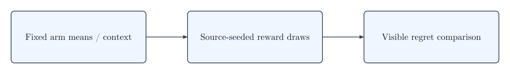
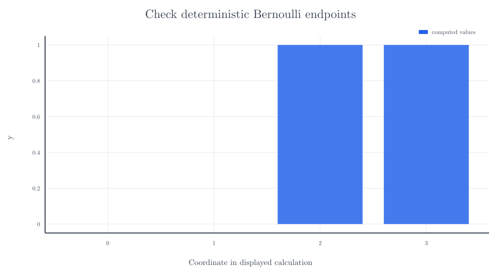
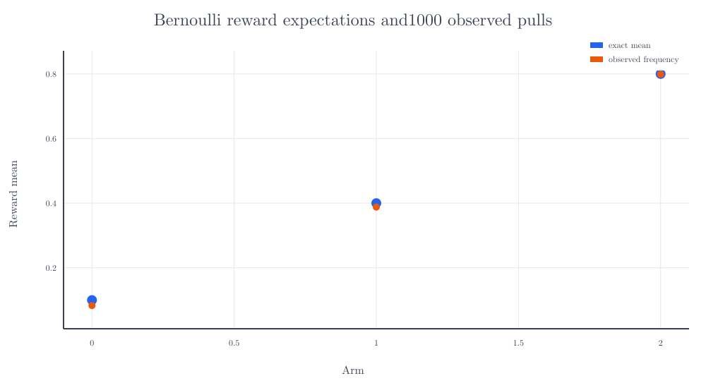

Bandit Environments: Reward Means, Noise and Regret
Abstract
Native C++ simulations expose explicit actions, seeded state transitions and owning observations. The complete editable source protocol retains its policy comparisons and checks. There is no hidden learning loop or external simulator process.
Follow one actual transition
#include <dm/dm.hpp>
int main(){std::filesystem::create_directories("build");dm::graphics::Diagram d(28,1150);dm::graphics::DiagramNodeStyle style;style.width=13;style.height=5;style.font_size=24;d.node("input",{-17,0},"Fixed arm means / context",style);d.node("step",{0,0},"Source-seeded reward draws",style);d.node("result",{17,0},"Visible regret comparison",style);d.edge("input","step").edge("step","result").save_svg("build/bandits_method.svg");}
Check deterministic Bernoulli endpoints
An arm with success probability0 always pays0, and an arm with probability1 always pays1. These two exact endpoints separate an expected reward from a noisy observation before the source tests sample means.
#include <dm/dm.hpp>
int main(){namespace e=dm::rl::environments;std::filesystem::create_directories("build");auto env=e::MultiArmedBandit::Bernoulli({0,1});env.reset(1);auto a=env.step(0);env.reset();auto c=env.step(1);std::vector<double>values{env.mean(0),a.reward,env.mean(1),c.reward};if(a.reward!=0||c.reward!=1)return 1;std::print("| coordinate | computed value |\n|---:|---:|\n");for(size_t i=0;i<values.size();++i)std::print("| {} | {:.9f} |\n",i,values[i]);dm::nn::save_npz("build/bandits_worked.npz",{{"values",dm::nn::from_vector(values)}});std::vector<double>x(values.size());std::iota(x.begin(),x.end(),0.);const double low=std::min(0.,*std::min_element(values.begin(),values.end())),high=std::max(0.,*std::max_element(values.begin(),values.end())),span=std::max(1e-9,high-low);dm::graphics::RPlot::create().ylim(low-.05*span,high+.05*span).bars(x,values,"computed values",{37,99,235}).title("Check deterministic Bernoulli endpoints").x_label("Coordinate in displayed calculation").size(1000,550).save_svg("build/bandits_worked.svg");}| coordinate | computed value |
|---|---|
| 0 | 0.000000000 |
| 1 | 0.000000000 |
| 2 | 1.000000000 |
| 3 | 1.000000000 |

Complete source experiment
The source seeds, episode counts, controls and checks are preserved. Every rollout and policy loop is visible here, using canonical C++ environment objects. The replay shows 15 random pulls followed by 15 pulls of the best arm.
#include <dm/dm.hpp>
// CMD: just run-nn bandits
// Multi-armed bandits.
//
// Port of tflow's bandits. Bandits are one-step environments: no state (or a
// context that does not depend on the action), a reward per pull, and the
// episode ends. This program shows the three variants in
// common/rl/bandit.hpp (copied from tflow) and the notion of regret that
// bandit algorithms (6.2) try to minimise. The replay preserves the source
// draws, and the report checks sample means, regret and the contextual oracle.
// Editable workflow support: checks.hpp
// Small runtime checks used by the executable nn examples. They stay on in
// Release builds and make the example exit nonzero on failure, so `just
// run-all-nn` doubles as a regression test against the recorded TF numbers.
// Editable workflow support: runtime.hpp
// Bounded demonstrations by default; opt into convergence experiments explicitly.
namespace example_runtime {
inline bool Full() {
const char* value = std::getenv("DATAMUNGE_EXAMPLES_FULL");
return value && std::string(value) == "1";
}
template <typename T> T Limit(T requested, T quick_limit) {
return Full() ? requested : std::min(requested, quick_limit);
}
inline void Describe() {
if (!Full())
std::cout << "Quick demonstration: bounded training; convergence metrics require "
"DATAMUNGE_EXAMPLES_FULL=1.\n";
}
} // namespace example_runtime
namespace check {
inline void Require(bool condition, const std::string& message) {
if (!condition) throw std::runtime_error(message);
}
// A short demonstration checks execution, derivatives and persistence; reaching
// a published accuracy/return requires the separately requested full schedule.
inline void TrainingQuality(bool condition, const std::string& message) {
if (example_runtime::Full()) Require(condition, message);
else std::cout << " full-training quality check deferred: " << message << '\n';
}
inline void Near(double actual, double expected, double tolerance, const std::string& message) {
if (!std::isfinite(actual) || !std::isfinite(expected) || std::abs(actual - expected) > tolerance)
throw std::runtime_error(message + ": got " + std::to_string(actual) + ", expected " + std::to_string(expected));
}
/// Expects `f` to throw; returns the message.
template <typename F>
std::string Throws(F&& f, const std::string& message) {
try {
f();
} catch (const std::exception& e) {
return e.what();
}
throw std::runtime_error(message + ": expected an exception");
}
} // namespace check
inline void Header(const std::string& title) {
const std::size_t pad = title.size() < 60 ? 60 - title.size() : 0;
std::cout << "\n== " << title << " " << std::string(pad, '=') << "\n";
}
// Editable workflow support: rl/bandit.hpp
namespace rl {
using datamunge::rl::environments::ArmNames;
using datamunge::rl::environments::MultiArmedBandit;
using datamunge::rl::environments::ContextualBandit;
}
// Editable workflow support: rl/utils.hpp
// datamunge::nn port: copied from tflow_examples src/common/rl/utils.h (TF-free code, unchanged).
// Small helpers shared by the RL examples: episode statistics, random and
// greedy rollouts, and printing.
// Editable workflow support: rl/env.hpp
namespace rl {
using datamunge::rl::environments::Obs;
using datamunge::rl::environments::Action;
using datamunge::rl::environments::ActionSpace;
using datamunge::rl::environments::StepResult;
using datamunge::rl::environments::Env;
using datamunge::rl::environments::EnvBase;
using datamunge::rl::environments::Transition;
using datamunge::rl::environments::TabularEnv;
}
namespace rl {
struct EpisodeStats {
std::vector<float> returns;
std::vector<int> lengths;
float mean_return() const {
return returns.empty() ? 0.f
: std::accumulate(returns.begin(), returns.end(), 0.f) / returns.size();
}
float mean_length() const {
return lengths.empty() ? 0.f
: std::accumulate(lengths.begin(), lengths.end(), 0.f) / lengths.size();
}
float min_return() const { return *std::min_element(returns.begin(), returns.end()); }
float max_return() const { return *std::max_element(returns.begin(), returns.end()); }
};
// Run `episodes` episodes of `env` choosing actions with `policy(obs)`.
// Uniformly random actions.
inline void PrintStats(const std::string& label, const EpisodeStats& s) {
std::printf(" %-32s return mean %8.2f min %8.2f max %8.2f length mean %6.1f\n",
label.c_str(), s.mean_return(), s.min_return(), s.max_return(), s.mean_length());
}
inline int ArgMax(const std::vector<float>& v) {
return static_cast<int>(std::max_element(v.begin(), v.end()) - v.begin());
}
// Argmax with ties broken uniformly at random.
inline int ArgMaxRandomTie(const float* q, int n, std::mt19937_64& rng) {
float best = q[0];
for (int i = 1; i < n; ++i) best = std::max(best, q[i]);
std::vector<int> ties;
for (int i = 0; i < n; ++i)
if (q[i] == best) ties.push_back(i);
return ties[rng() % ties.size()];
}
inline std::string FormatObs(const Obs& o, int max_elems = 8) {
std::string s = "[";
for (size_t i = 0; i < o.size() && static_cast<int>(i) < max_elems; ++i) {
char buf[32];
std::snprintf(buf, sizeof buf, "%s%.3f", i ? " " : "", o[i]);
s += buf;
}
if (static_cast<int>(o.size()) > max_elems) s += " ...";
return s + "]";
}
} // namespace rl
int main() {
try {
std::cout << "== 10-armed Gaussian testbed (Sutton & Barto 2.3)\n";
rl::MultiArmedBandit testbed = rl::MultiArmedBandit::Testbed(10, /*seed=*/42);
testbed.Seed(0);
std::cout << " " << testbed.name() << " action_space=" << testbed.action_space().ToString()
<< " obs_size=" << testbed.obs_size() << "\n";
std::printf(" %-4s %10s %12s\n", "arm", "true mean", "sample mean");
for (int a = 0; a < testbed.num_arms(); ++a) {
double sum = 0;
for (int i = 0; i < 1000; ++i) {
testbed.reset();
sum += testbed.step(a).reward;
}
std::printf(" %-4d %10.3f %12.3f%s\n", a, testbed.mean(a), sum / 1000,
a == testbed.best_arm() ? " <- best" : "");
// Unit-variance rewards: the mean of 1000 pulls is within 4 standard errors.
check::Near(sum / 1000, testbed.mean(a), 4 / std::sqrt(1000.0), "sample mean of arm " + std::to_string(a));
}
std::cout << "\n== Regret: how much a policy loses against always pulling the best arm\n";
const int T = 2000;
std::mt19937_64 rng(0);
double random_reward = 0, best_reward = 0;
for (int t = 0; t < T; ++t) {
testbed.reset();
random_reward += testbed.step(testbed.action_space().Sample(rng)).reward;
testbed.reset();
best_reward += testbed.step(testbed.best_arm()).reward;
}
float mean_of_means = 0;
for (int a = 0; a < testbed.num_arms(); ++a) mean_of_means += testbed.mean(a);
mean_of_means /= testbed.num_arms();
const double expected_regret = T * (testbed.best_mean() - mean_of_means);
std::printf(" over %d pulls: random policy %.1f, best arm %.1f, regret %.1f (expected %.1f)\n",
T, random_reward, best_reward, best_reward - random_reward, expected_regret);
// Standard deviation of the regret: about sqrt(2T) from the reward noise plus the spread of the means.
check::Near(best_reward - random_reward, expected_regret, 0.1 * expected_regret + 4 * std::sqrt(4.0 * T),
"regret of the random policy");
// Capture 15 random pulls followed by 15 pulls of the best arm.
std::vector<std::pair<int, float>> pulls;
for (int t = 0; t < 30; ++t) {
const int arm = t < 15 ? static_cast<int>(rng() % testbed.num_arms()) : testbed.best_arm();
testbed.reset();
pulls.emplace_back(arm, testbed.step(arm).reward);
}
std::filesystem::create_directories("build");
std::filesystem::create_directories("figures");
const std::string replay = "bandits_random_then_best_arm.mp4";
dm::rl::environments::save_bandit_replay(testbed.num_arms(), pulls, "build/" + replay, 0.f);
std::filesystem::copy_file("build/" + replay, "figures/" + replay,
std::filesystem::copy_options::overwrite_existing);
std::vector<int> arms;
std::vector<float> rewards;
for (const auto& [arm, reward] : pulls) {
arms.push_back(arm);
rewards.push_back(reward);
}
dm::nn::save_npz("build/bandits_replay.npz",
{{"arm", dm::nn::from_vector(arms)}, {"reward", dm::nn::from_vector(rewards)}});
std::cout << "\n== Bernoulli arms\n";
rl::MultiArmedBandit coins = rl::MultiArmedBandit::Bernoulli({0.1f, 0.5f, 0.7f, 0.65f});
coins.Seed(1);
for (int a = 0; a < coins.num_arms(); ++a) {
int wins = 0;
for (int i = 0; i < 1000; ++i) {
coins.reset();
wins += coins.step(a).reward > 0;
}
std::printf(" arm %d: p=%.2f observed %d/1000\n", a, coins.mean(a), wins);
check::Near(wins / 1000.0, coins.mean(a), 4 * std::sqrt(0.25 / 1000), "win rate of coin " + std::to_string(a));
}
std::cout << "\n== Contextual bandit: the best arm depends on the context\n";
rl::ContextualBandit ctx(/*context_dim=*/4, /*num_arms=*/3, /*seed=*/3);
ctx.Seed(0);
for (int round = 0; round < 4; ++round) {
rl::Obs x = ctx.reset();
std::printf(" context %s P(reward|arm) =", rl::FormatObs(x).c_str());
for (int a = 0; a < ctx.num_arms(); ++a) std::printf(" %.2f", ctx.ExpectedReward(a));
rl::StepResult r = ctx.step(ctx.BestArm());
std::printf(" best arm %d -> reward %.0f\n", ctx.BestArm(), r.reward);
}
// Average reward of three fixed policies over many rounds.
const int R = 5000;
std::vector<double> fixed(ctx.num_arms(), 0.0);
double oracle = 0, random = 0;
for (int t = 0; t < R; ++t) {
ctx.reset();
for (int a = 0; a < ctx.num_arms(); ++a) fixed[a] += ctx.ExpectedReward(a);
oracle += ctx.ExpectedReward(ctx.BestArm());
random += ctx.ExpectedReward(static_cast<int>(rng() % ctx.num_arms()));
}
std::printf(" mean reward over %d rounds: random %.3f, always-arm", R, random / R);
for (int a = 0; a < ctx.num_arms(); ++a) std::printf(" %d=%.3f", a, fixed[a] / R);
std::printf(", oracle %.3f\n", oracle / R);
for (int a = 0; a < ctx.num_arms(); ++a)
check::Require(oracle > fixed[a], "the context-aware oracle should beat always pulling arm " + std::to_string(a));
check::Require(oracle > random, "the oracle should beat random pulls");
std::cout << "\nchecks passed\n";
} catch (const std::exception& e) {
std::cerr << "FAILED: " << e.what() << "\n";
return 1;
}
return 0;
}
== 10-armed Gaussian testbed (Sutton & Barto 2.3) GaussianBandit(10) action_space=Discrete(10) obs_size=0 arm true mean sample mean 0 0.705 0.691 1 1.294 1.310 <- best 2 -0.574 -0.650 3 0.398 0.378 4 -1.907 -1.951 5 1.119 1.121 6 -0.724 -0.696 7 -1.492 -1.508 8 0.015 0.013 9 -0.309 -0.344 == Regret: how much a policy loses against always pulling the best arm over 2000 pulls: random policy -334.9, best arm 2576.8, regret 2911.7 (expected 2882.8) == Bernoulli arms arm 0: p=0.10 observed 83/1000 arm 1: p=0.50 observed 490/1000 arm 2: p=0.70 observed 703/1000 arm 3: p=0.65 observed 648/1000 == Contextual bandit: the best arm depends on the context context [0.102 -0.681 -1.096 1.845] P(reward|arm) = 0.98 0.94 0.13 best arm 0 -> reward 1 context [-1.244 1.425 0.536 -0.749] P(reward|arm) = 0.68 0.91 0.95 best arm 2 -> reward 1 context [-1.130 1.863 0.672 -0.472] P(reward|arm) = 0.69 0.95 0.95 best arm 2 -> reward 1 context [1.139 -0.342 -0.388 -0.245] P(reward|arm) = 0.31 0.06 0.37 best arm 2 -> reward 0 mean reward over 5000 rounds: random 0.550, always-arm 0=0.556 1=0.508 2=0.588, oracle 0.770 checks passed
Compare exact Bernoulli means with observed frequencies
These1000 pulls per arm are an additional seeded diagnostic on probabilities.1,.4,.8. The original Gaussian/contextual tests and regret loops above retain their full source draw budgets.
#include <dm/dm.hpp>
int main(){namespace e=dm::rl::environments;auto env=e::MultiArmedBandit::Bernoulli({.1f,.4f,.8f});env.reset(1);std::vector<double>x,mean,observed;for(int arm=0;arm<3;++arm){double sum=0;for(int i=0;i<1000;++i){env.reset();sum+=env.step(arm).reward;}x.push_back(arm);mean.push_back(env.mean(arm));observed.push_back(sum/1000);}dm::nn::save_npz("build/bandits_means.npz",{{"arm",dm::nn::from_vector(x)},{"mean",dm::nn::from_vector(mean)},{"observed",dm::nn::from_vector(observed)}});dm::graphics::RPlot::create().points(x,mean,"exact mean",{37,99,235},7).points(x,observed,"observed frequency",{234,88,12},5).x_label("Arm").y_label("Reward mean").title("Bernoulli reward expectations and1000 observed pulls").size(1000,550).save_svg("build/bandits_means.svg");}
Interpretation
The source checks report reproducibility and the stated control comparisons. Distinguish the displayed fixed-action diagnostics from the original policies, MDP terminality from time-limit truncation, expected reward from sampled return, and a legal game move from an arbitrary action index. All policies and episode loops remain editable here.
Pull replay
The first 15 pulls choose uniformly at random. The final 15 always choose the arm with the highest true mean. Green marks a nonnegative observed reward.